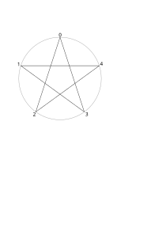

我们都知道，正五角星只有一种画法（除去平凡的正五边形情形），但当点数增大时，画法就有很多了。我感觉当点数增加时，绘制的形状应该会很好看，于是就写了这个网页画着玩。
结论：确实好看。
在下面的输入框中输入格式的数据来绘制图形， 其中是边数，是连接间隔，例如输入表示在一个圆上逆时针均匀排布5个顶点中，每个顶点连接其后第2个顶点。决定绘制的是几角星，剩余的控制子图形的连接间隔。

示例：
5:2→ 五角星（5个顶点，间隔个点连接）8:3→ 八角星（8个顶点，间隔个点连接）6:2→ 六芒星（6个顶点，间隔个点连接）10:2,5:2→ 由两个五角形组成的十角星35:5,7:2→ 由5个7角形组成的35角星
可以替换为使用不同间隔轮流填充
示例：
16:[4,2]→ 16角星，但是轮流使用八边形和四边形填充
在连接间隔后面加上小数点可以使形状不调用接下来的间隔
示例：
10:[2,2.],5:2→ 由一个五边形和一个五角形组成的10角星60:[12,12.],5:2→ 由五边形和五角形组成的60角星
让我们把东西组合在一起：
- 试试
32:[4,2,4.,2],8:3,16:3
题外话
从群的角度你可以很容易地理解这个程序在做什么，正边形的对称性构成阶循环群 :
- 对顶点编号： 对应群元素
- 配备的运算：模加法
连接间隔是群生成元，连接操作定义为群作用：
- 当 互素时构成单一轨道（orbit），并且也完全生成了整个循环群。
- 例如五角星 ：
- 生成元
- 连接序列：
- 例如五角星 ：
- 当时，群作用分解为个轨道，每个轨道是大小为的循环子群。因此我们可以对这些轨道做递归操作，最后生成复杂图像。例如10角星 ：
- 轨道1： 五边形
- 轨道2： 五边形
- 五边形可以再通过生成五角星
不过如果使用不同间隔轮流填充就没有什么理论保证了，所以当你使用这个语法时，有时候会能看到有些顶点被重复使用，有些顶点却没被使用。